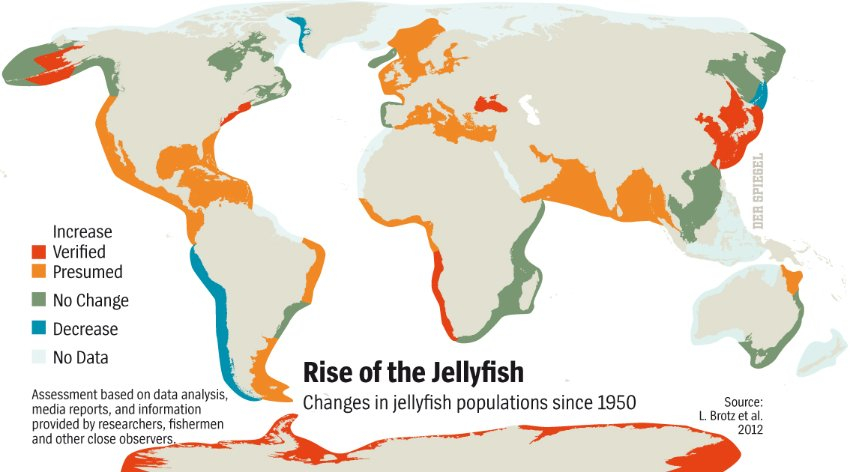
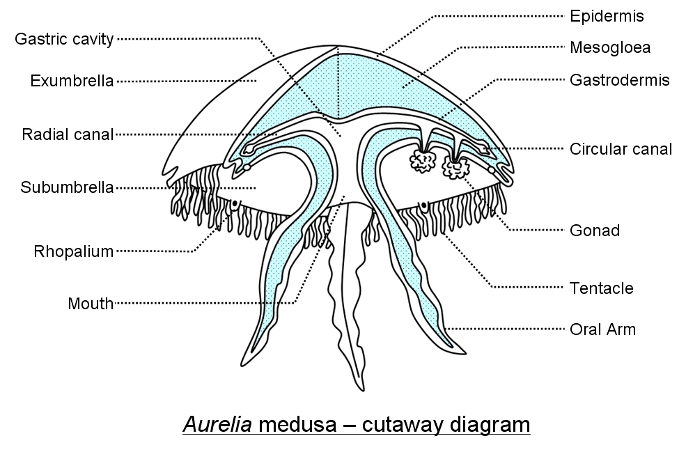
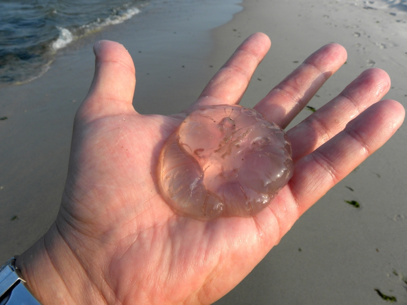

Moon Jellies live within the epipelagic zone (0-200m below sea level) of oceans. However, they are spotted near shores as their prey surrounds that area. They are also weak swimmers, sometimes dragged to shores by currents. They reside in the Atlantic, Pacific and Indian Oceans. There are higher concentrations of them in Europe and North America. Optimal temperatures for them are between 9 °C to 19 °C.
Moon Jellies are translucent and have a blue, purple or pink hue. Their pale and round figure is where they get their name from. They have four bright horseshoe-shaped gonads on their domes. Around the crown are nematocysts (stinging cells) to capture prey. They have a sticky mucus coating. Their bodies are 95% water. Fully grown Moon Jellies are usually 25-40 cm wide. Pulsations of the crown, caused by coronal muscles, keep them afloat.
Food of the Moon Jelly:
The Moon Jelly eat by capturing their prey with their venomous tentacles. The food is immobilized, swallowed and broken down by digestive enzymes.
Moon Jellyfish don't have many nutrients, so many of these have to be consumed for the predator to gain the energy it needs.
Their stings may leave small, swollen red rashes. However, they are weak so most humans don't experience the stinging sensation. Humans with thinner skin are more susceptible to sting symptoms.
See, this man is perfectly fine!
Back To Top